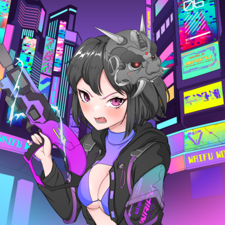

.png)

WELCOME TO WORLD WAIFU

Lovely Waifus are awaiting their fates with their belove Husbandos!
World Waifu is a community project to keep all Husbandos(Waifu NFT holders) earning long-term passive income with the work of Waifu Tokenomics and NFTnomics. A collection of 5000 Waifu NFTs and our Waifu Token will be released on #Cronos.
WAIFU'S ROADMAP & MORE
STEP 1: LAUNCHING WAIFU TOKEN
Total supply: 1 Million
Tax: 6% on any transaction
2%: Liquidity
2%: Buyback for NFT staking
2%: Project fund

STEP 2: LAUNCHING WAIFU NFT COLLECTION
Collection size: 5000 NFTs
Mint date: Sunday 08/21/2022 3PM EST
Mint Price:
Whitelist: 25 Cro
Corgi Club Holder: 25 Cro
Public Minting: 50 Cro
WHITELIST REQUIREMENT: Hold at least 5000 Waifu Tokens.
STEP 3: LAUNCHING WAIFU QUEEN COLLECTION AND FUND ALLOCATION
WAIFU QUEEN COLLECTION
Collection size: 20NFTs
Mint price: TBA
FUND ALLOCATION
90% NFT fund will be allocate in Waifu Treasury which will be use for staking. Earnings wil be distribute to NFT holders by staking.
EARNINGS DISTRIBUTION
- 60% NFT Staking
- 20% Compound Treasury staking to ensure bigger earning over time.
-15% Earning for development, fees, marketing, and other expenses.
-5% DISTRIBUTE TO THE LEGENDARY WAIFU QUEEN COLLECTION HOLDERS.
-50% Royalty will be put into Treasury for staking.